| index | value |
|---|---|
| 1980 Feb | 4.62 |
| 1980 Mar | 6.04 |
| 1980 Apr | 5.29 |
| 1980 May | 5.70 |
| 1980 Jun | 5.31 |
| 1980 Jul | 5.55 |
Séries Temporais - Introdução e gráficos
Introdução à disciplina Séries Temporais
Uma série temporal consiste em um conjunto de observações de uma variável aleatória ordenada no tempo. A Análise de Séries temporais visa o estudo e obtenção de modelos preditivos para este tipo de dados. O objetivo ao final é realizar previsões com o modelo obtido, de forma a viabilizar ações de planejamento necessárias.
A previsão é importante em diversos contextos das engenharias, administração e ciências. Por exemplo, para decidir o nível de produção e planejar o próximo período é importante prever a demanda. Para avaliar se um investimento é viável é importante prever a sua rentabilidade. Para planejamento dos sistemas energéticos é importante prever o consumo de energia.
Exemplos de séries e visualizações
A seguir observa-se graficamente a série temporal do índice de preços ao consumidor (IPCA), com frequência mensal a partir de 1980. A série foi obtida em http://www.ipeadata.gov.br. As primeiras observações da série também são exibidas. Observa-se claramente como a inflação no país foi controlada a partir da adoção do plano real.
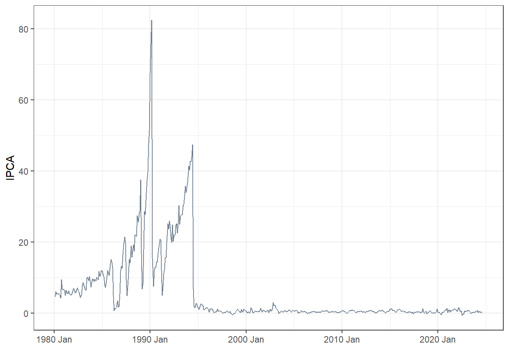
Para visualizar melhor como o IPCA variou nos últimos anos, pode-se selecionar os dados a partir do ano 2000.
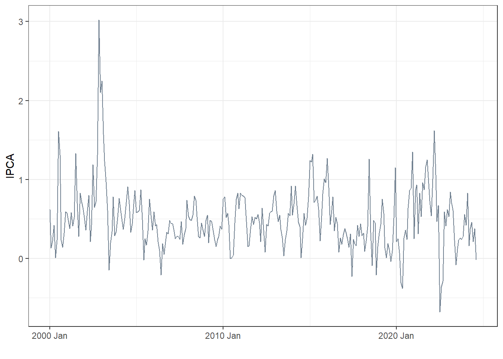
A seguir apresentam-se as primeiras observações da série temporal de volume de carros produzidos no Brasil a partir de 1990. A série foi obtida em https://anfavea.com.br/site/edicoes-em-excel/ e apresenta frequência mensal.
| data | valor |
|---|---|
| 1990-02-01 | 57258 |
| 1990-03-01 | 32740 |
| 1990-04-01 | 32812 |
| 1990-05-01 | 58464 |
| 1990-06-01 | 37632 |
| 1990-07-01 | 43697 |
A série é plotada à seguir. Pode-se observar alguns períodos de queda no volume, por exemplo, próximo de 2015 durante a crise política do país e em 2020 durante a pandemia, onde a produção chegou a níveis anteriores aos dos anos 2000.
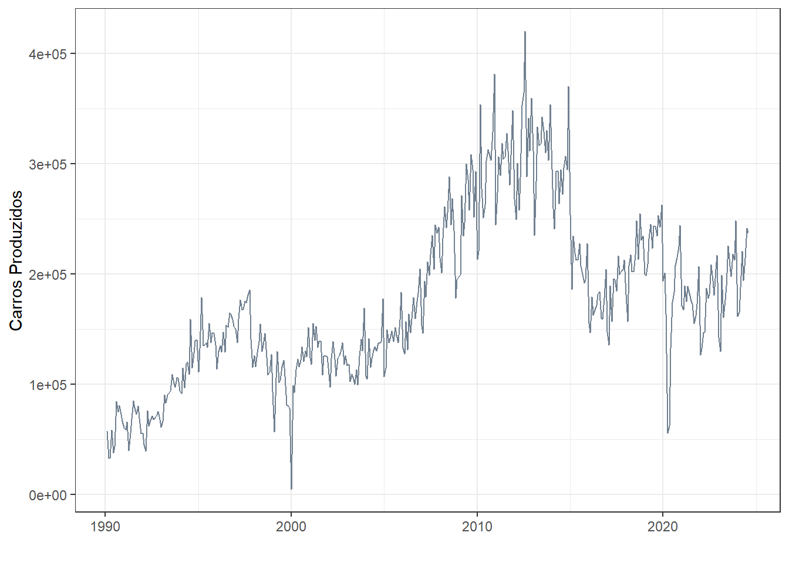
Um exemplo de série temporal multivariada é tomada a seguir considerando dados de visualizaçoes de 4 vídeos da playlist Tolerâncias e ajustes do Canal da engenharia de manufatura e qualidade. A série inicia em 2018, ano de início do canal, porém só tem dados segundo a data de lançamento de cada vídeo. A seguir são observadas algumas linhas da série.
| Date | Views | Video |
|---|---|---|
| 2018-02-19 | 0 | #1 |
| 2018-02-20 | 0 | #1 |
| 2018-02-21 | 0 | #1 |
| 2018-02-22 | 0 | #1 |
| 2018-02-23 | 0 | #1 |
| 2018-02-24 | 0 | #1 |
Em seguida a série multivariada é plotada.
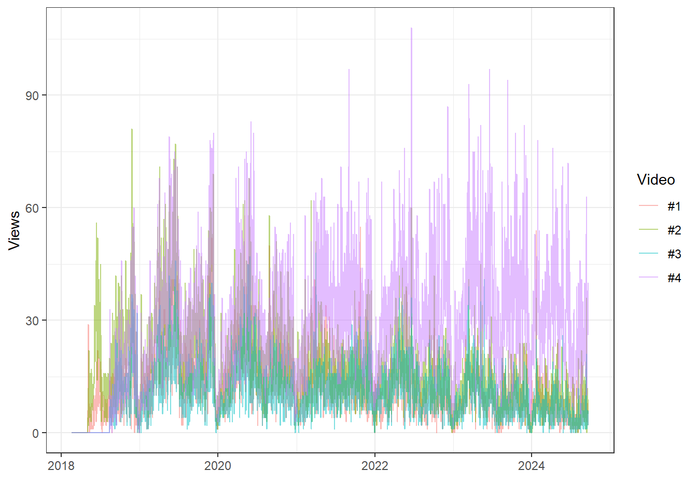
Tomando a série do vídeo 4 plotado a partir de setembro de 2018.

Pode-se visualizar os dados desta série em subséries anuais, de forma a ver a sazonalidade presente nos dados. Pode-se visualizar os picos de visualizações em Abril e Outubro coincidindo com períodos de picos de estudos nos primeiro segundo semestres anuais.
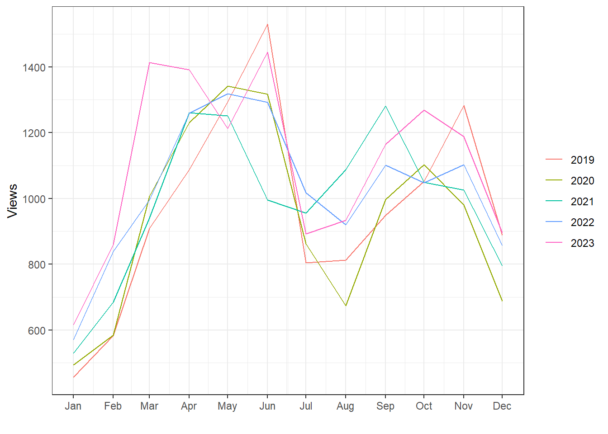
Pode-se plotar o gráfico sazonal visualizando a variação anual dentro de cada mês.

A seguir são observados dados de produção de quatro tipos de energia para o ano de 2023 no Brasil. Os dados são fornecidos em frequência horária e estão disponíveis em https://dados.ons.org.br/group/programacao-da-operacao.
| id_subsistena | nom_subsistema | din_instante | val_gerhidraulica | val_gertermica | val_gereolica | val_gersolar | val_carga | val_intercambio |
|---|---|---|---|---|---|---|---|---|
| NE | NORDESTE | 2023-01-01 00:00:00 | 3874.073 | 677.063 | 13305.262 | 1.932 | 10455.818 | 7402.512 |
| N | NORTE | 2023-01-01 00:00:00 | 7858.744 | 877.855 | 211.772 | 0.000 | 5990.553 | 2957.818 |
| SIN | SISTEMA INTERLIGADO NACIONAL | 2023-01-01 00:00:00 | 39057.309 | 5698.335 | 14138.750 | 21.155 | 58904.080 | 11.470 |
| SE | SUDESTE/CENTRO-OESTE | 2023-01-01 00:00:00 | 24661.111 | 4071.577 | 6.000 | 18.223 | 32183.885 | -3426.974 |
| S | SUL | 2023-01-01 00:00:00 | 2663.381 | 71.840 | 615.716 | 1.000 | 10273.827 | -6921.890 |
| NE | NORDESTE | 2023-01-01 01:00:00 | 3374.274 | 678.442 | 12960.627 | 1.013 | 10481.710 | 6532.646 |
A série temporal multivariada é plotada a seguir. Pode-se observar o aumento na produção das fontes complementares quando a hidráulica apresentou declínio no período mais seco do ano.
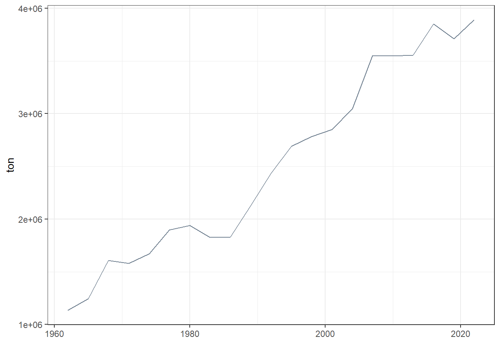
A série temporal multivariada é plotada em múltiplos painéis a seguir.
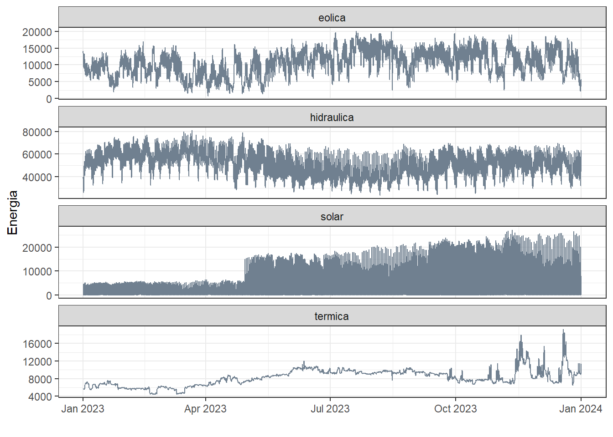
Em algumas situações é importante agregar os dados de forma a facilitar a interpretação. A seguir plota-se a mesma série agregada diariamente. Fica mais fácil notar a correlação negativa entre a série hidráulica e as demais.
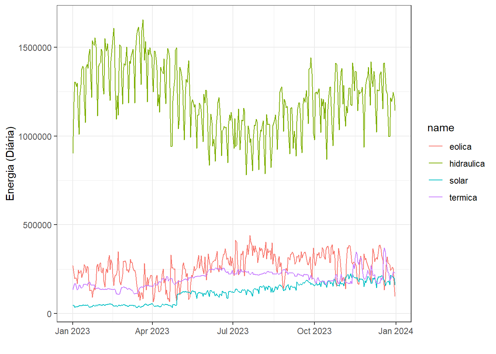
Pode-se visualizar a correlação aos pares entre os diferentes tipos de energia considerados.
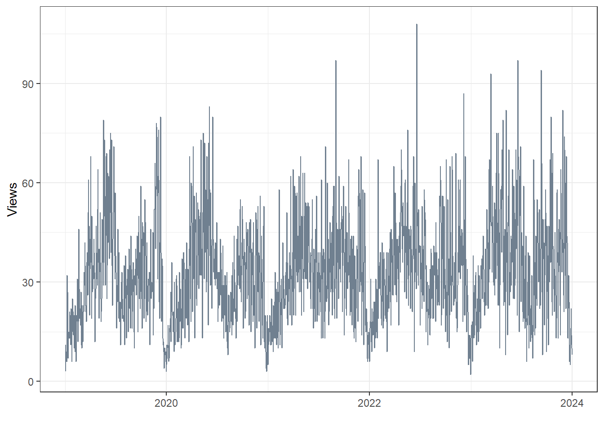
Para uma interpretação ainda mais fácil realiza-se uma última agregação a nível mensal.

Observa-se que a correlação considerando a frequência mensal fica muito mais clara.
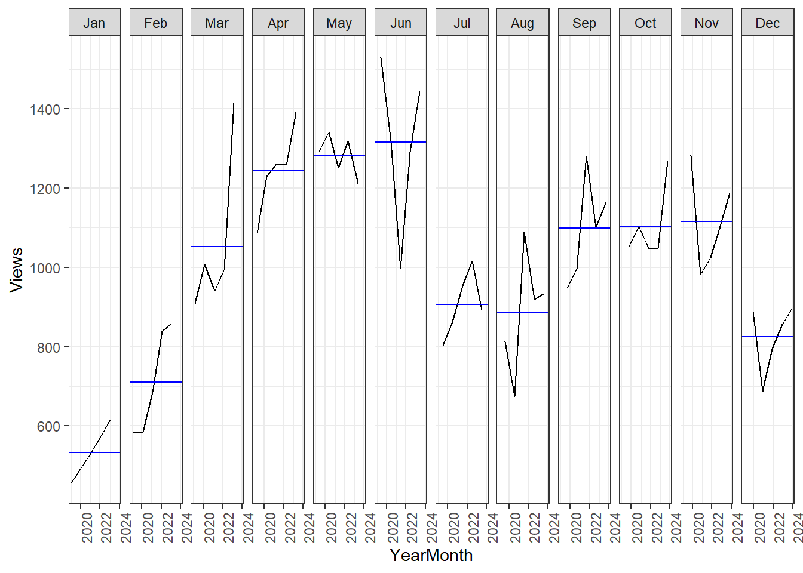
A seguir apresenta-se a série temporal de níveis de CO2 na atmosfera medida no Observatório Mauna Loa, Havaí, desde 1958, https://climate.nasa.gov/vital-signs/carbon-dioxide. Observa-se um padrão de crescimento não linear com ciclos sazonais bem definidos.
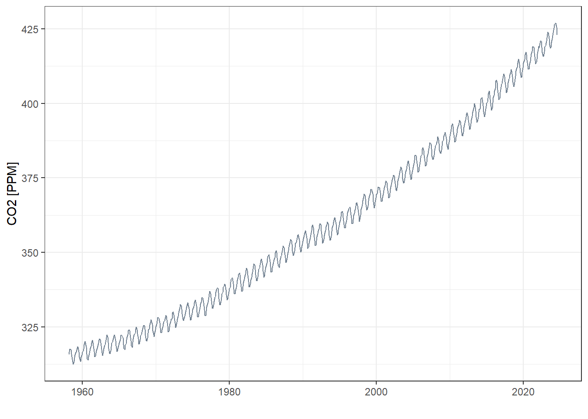
A seguir apenas os últimos 4 anos são plotados. Pode-se observar que os períodos sazonais de pico coincidem com o início da primavera no hemisfério norte, enquanto os vales são observados no período de crescimento das plantas, as quais capturam parte significativa do CO2 da atmosfera.
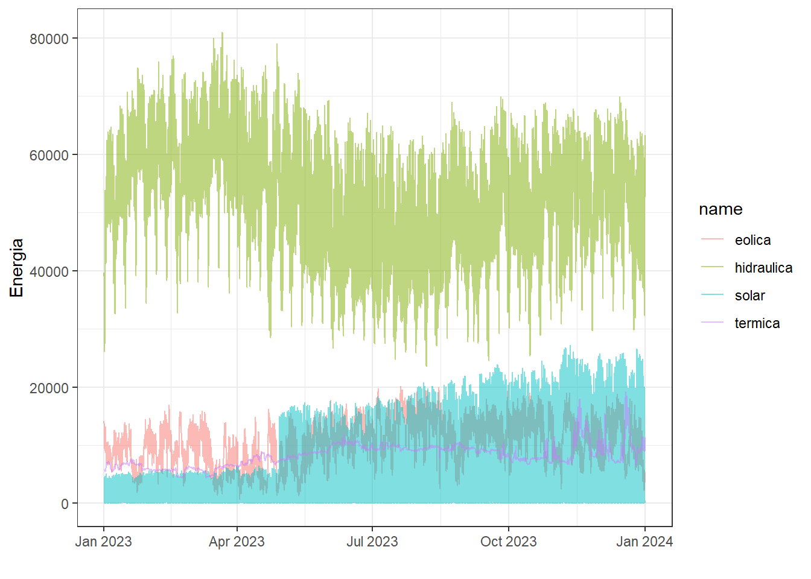
O gráfico sazonal também pode ser útil neste caso.

Existem diversas formas de decompor séries temporais. A seguir é observada uma decomposição aditiva sazonal da série CO2. A componente cíclica é removida e o restante é suavizado para encontrar uma tendência. O resíduo consiste na diferença entre a série original e a soma da tendência e da componente sazonal.
| CO2 | trend | season_year | remainder | season_adjust |
|---|---|---|---|---|
| 315.71 | 314.9477 | 1.0263767 | -0.2640423 | 314.6836 |
| 317.45 | 315.0187 | 2.2221543 | 0.2091377 | 315.2278 |
| 317.51 | 315.0898 | 2.7703197 | -0.3500701 | 314.7397 |
| 317.27 | 315.1608 | 2.2787986 | -0.1695914 | 314.9912 |
| 315.87 | 315.2266 | 0.8557299 | -0.2123500 | 315.0143 |
| 314.93 | 315.2924 | -1.0241591 | 0.6617119 | 315.9542 |
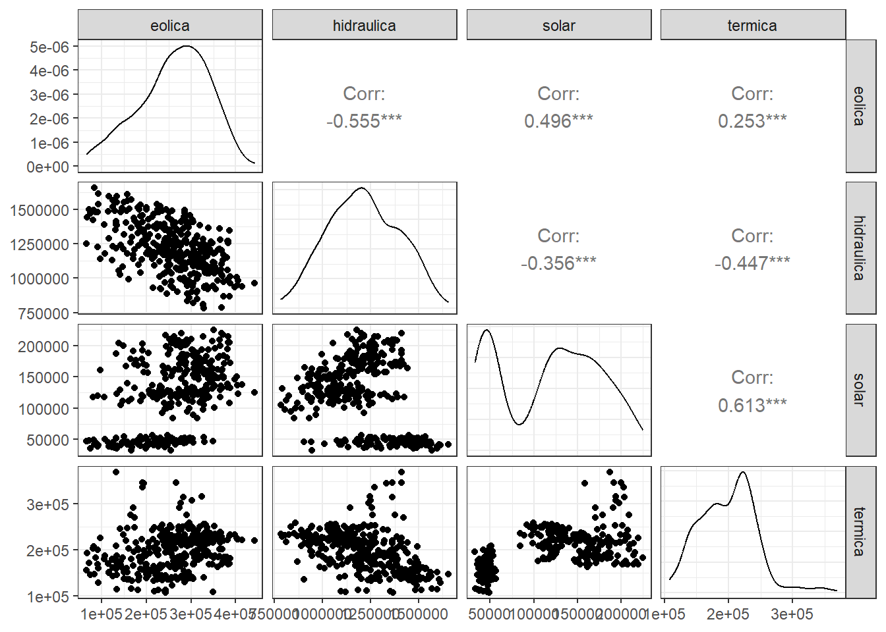